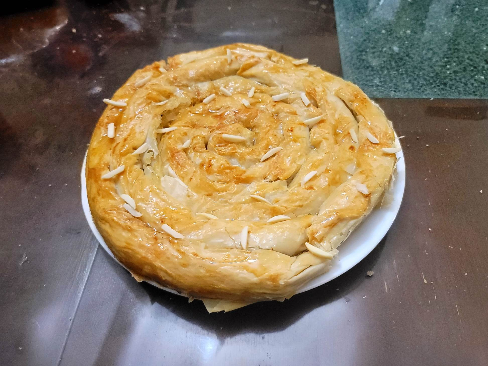

M'hancha

Ingredients:
Almond Paste:
- 500 g Almonds, raw or blanched
- Optional: Vegetable oil, for frying
- 225 g Sugar
- 1/4 tsp Cinnamon
- 1/8 tsp Mastic gum
- 60 g Butter, softened
- 2-3 tbsp Orange blossom water
Pastry:
- 10 Warqa leaves or 1 lb Phyllo dough sheets
- 100 g Butter, melted
- 1 Egg + 1 tbsp, whisked together for egg wash
Garnish:
- 1 cup Honey
- Orange blossom water, to taste
- Almond slivers
Instructions:
- If using raw almonds, blanch and peel them. Let dry completely.
- Optionally, Heat some oil in a pan and fry only half of the almonds until golden brown, tossing very often. Then let cool and dry completely.
- Add all the almonds and sugar to a food processor. Process until it forms a smooth paste. Then add in the rest of the almond paste ingredients and process until combined.
- Roll the almond paste into a long log, about the thickness of your thumb.
- Preheat an oven to 350 degrees Fahrenheit. Line a baking sheet with parchment paper.
- Take a phyllo sheet and brush with melted butter. Add the almond paste in a thin line across the long side nearest you. Roll it into a log and then wrap it into a coil. Place into the center of the baking sheet and then repeat with the remaining phyllo sheets. Then brush over the top of the coil with more melted butter. Then brush again with the egg wash.
- Transfer to the oven and bake for 30-40 minutes, or until golden.
- Heat the honey in a saucepan just until it becomes runny. Then remove from the heat and stir in the orange blossom water. Sprinkle the pastry with almond slivers and drizzle with the honey. Serve immediately with the leftover honey as a dip.